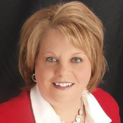

Agents
Sandy DuFrane
Mobile: (920) 841-5374
With a solid reputation built upon expertise and professionalism, I have established a base of satisfied clients and customers who have the utmost confidence when recommending me to family and friends. I excel in all areas of real estate, including: Residential, Recreational, Relocation, Vacant Land, Commercial, Investment/Multi-Family, Subdivision/New Construction, and Mobile Home Sales. I serve the following areas: New London, Hortonville, Greenville, Appleton, Waupaca, Fremont, Clintonville, Shiocton, Black Creek, Weyauwega, Manawa, and more. Call, text, stop by my office or email me!
Jessica Engle
Mobile: (920) 422-1179
Growing up in Northeast Wisconsin, I think of the Fox Valley area as a great place to live, raise a family and put down your roots! Having lived and worked in many of the neighborhoods I serve, I will offer you local expertise with friendly & helpful service you can count on. I will focus on meeting your needs for a qualified, informative real estate professional. Whether you need a skilled buyers agent or a trust-worthy listing agent, you will appreciate that I offer excellent customer service throughout the entire process! My goal is to make sure your buying and selling experiences are stress-free and memorable!
Chad Zandi
Mobile: (920) 476-7300
Recently I made the decision to follow a lifelong passion and join Expert Real Estate Partners. A Wisconsin native, I received my undergraduate degree from Marian University in Fond du Lac. I am especially connected to Northeast, Central, and Northern Wisconsin areas through immediate and extended family, friends, and professional, and personal associations. My individual engagement in home, the Fox Valley community, and the market allow me a depth of understanding of area neighborhoods, school districts, and on-going economic development across the Fox Valley. Organized and tenacious, I have been praised by my clients for my resourcefulness, veracity and dedication. My business tenet is very simply to assume the client’s priorities as my own. I use experiences from my other professional and personal journeys to ensure that the client’s real estate experiences are positive, and their objectives are met. Educating clients along the way is one of my priorities.
Michael Boyea
Mobile: (920) 712-4617
Michael Boyea began his career in real estate nearly 12 years ago. At age 19 he began buying rental properties and was involved with flipping homes and investments. Since becoming licensed in real estate in 2007, Michael has specialized in assisting home sellers, buyers, and investors in Northeast Wisconsin. He consistently goes above and beyond for his clients and aggressively advocates for their needs. Mike is a Wisconsin native and is truly invested and deeply connected to his local community. He fills much of his free time boating and enjoying time with his family and friends.
Patty Wohlt
Mobile: (920) 420-4098
With over 20 years of experience and life-time resident of the Fox Cities, Patty can assist you in every aspect of the home buying and selling process. Whether it be finding the best investment, selling with the least amount of worries or relocating into the area, Patty knows how to get it done! She can also assist you in finding the best schools, a great place to dine, or a fabulous hairdresser!! Call Patty TODAY for all your Real Estate needs!
Ann Thielman
Mobile: (920) 342-1534
Offering real estate services to both sellers and buyers in the Fox Valley area. In addition to applying my extensive marketing skills to market your home, I will also help stage your home so you show off its best features! I have been in your shoes – sold homes, purchased homes, relocated and built homes – so I understand what you are going through, and I am here to help you get through it too! Let me put my first hand knowledge and marketing expertise to work for you selling your home and finding a new one!

Emily Schuh
Mobile: (920) 450-3764
Serving all of Wisconsin Emily Schuh has a passion for homes, 12 Years of home design & construction experience from digging to finishing. A proven sales and customer service satisfaction background and a passion for helping people. She prides herself on matching the perfect people to the perfect home! Market knowledgeable, Wisconsin savy, and loves to travel! Her goal is to get you moving!
Jennifer Pribbernow
Mobile: (920) 427-4384
Jen is a full time Real Estate Professional dedicated to helping both home buyers and sellers with all their real estate needs. The home buying and selling process can be overwhelming. Jen will guide you through this step by step so you feel comfortable and confident in your purchase or sale. Born and raised in the Appleton area and a resident of Omro since 2003. Jen is confident in her market knowledge of the Fox Cities and surrounding areas. Jen and her husband Dan have 3 boys. She enjoys spending time with her family, football season and traveling.
Jim Anacker
Mobile: (608) 963-1880
We are very familiar with the Wisconsin Dells area and the surrounding communities. We have been involved in the real estate business for over 25 years. Our repeat and referral business has been the core of our business and we know that if we can exceed your expectations you will share this with your family and friends. We look forward to serving you!
Mary Walsh
Mobile: (715) 323-5594
Mary Walsh is more than just a real estate agent. To attain the designation of REALTOR®, Mary Walsh has proven she is more knowledgeable and experienced, above and beyond the legal requirements. Mary Walsh, as part of the network of REALTORS®, will cater to all of your real estate needs with the top-notch professional practices.
Quick Contact
Customer Service: 877-313-8601
Mon-Fri 7am - 4pm PST